Okonomiyaki

Description:
Popular street food from Osaka, Japan, Okonomiyaki is a savory version of Japanese pancake, made with flour, eggs, shredded cabbage, and your choice of protein, and topped with a variety of condiments
Okonomiyaki (お好み焼き) is sometimes called “Japanese savory pancake” or “Japanese pizza”, but personally, I think it’s more like a dish between savory pancake and frittata. It’s made with flour, eggs, tempura scraps (tenkasu), cabbage, and pork belly slices and topped with a variety of condiments like okonomiyaki sauce, Japanese mayonnaise, dried seaweed, and dried bonito flakes. If you don’t eat pork or prefer another protein choice, this dish is very adaptable. The possibility for the filling and topping choices are endless, which is why this dish in Japanese translates to “grilled as you like it” – Okonomi (as you like it) Yaki (grill).
Ingredients:
- Okonomiyaki Batter
- 1 cup all-purpose flour
- ¼ tsp kosher or sea salt
- ¼ tsp sugar
- ¼ tsp baking powder
- ¾ cup dashi
- 4 large eggs
- ½ cup tempura scraps
- Other Ingredients
- 1 large cabbage
- (optional) ½ lb sliced pork belly
- cooking oil
- Quick Okonomiyaki Sauce
- 1½Tbsp sugar
- 2 Tbsp oyster sauce
- 4 Tbsp tomato ketchup
- 3½Tbsp Worcestershire sauce
- Toppings
- Okonomiyaki sauce
- Japanese Mayonnaise
- Katsuobushi (dried bonito flakes)
- aonori (dried green seaweed)
- chopped green onions/scallions
Instructions
Gather all the ingredients.

To Prepare Okonomiyaki Batter
- In a large bowl, combine 1 cup (120g) all purpose flour, ¼ tsp salt, ¼ tsp sugar, and ¼ tsp baking powder and mix all together. 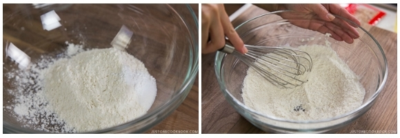
- Add the Dashi in the bowl. 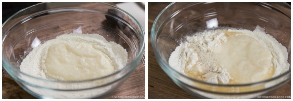
- Mix all together till combined. Cover the bowl with plastic wrap and let it rest in the refrigerator for at least one hour. Tip: This relaxes the gluten in the batter and improves the flavor and texture (fluffier). Some okonomiyaki shops refrigerate the batter overnight. Meanwhile, you can prepare the okonomiyaki sauce and other ingredients. 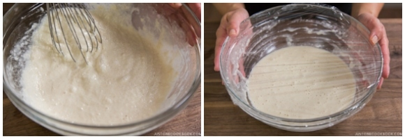
To Make Okonomiyaki Sauce
Meanwhile, gather all the ingredients for okonomiyaki sauce.
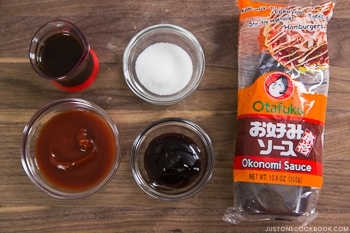Combine 1 ½ Tbsp sugar, 2 Tbsp oyster sauce, 4 Tbsp ketchup, and 3 ½ Tbsp Worcestershire sauce in a small bowl. Mix all together until sugar is completely dissolved.
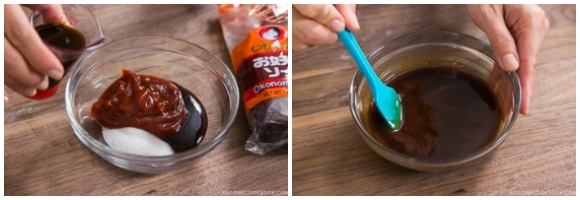
To Prepare Other Ingredients
Discard the core of the cabbage and then mince the cabbage leaves.
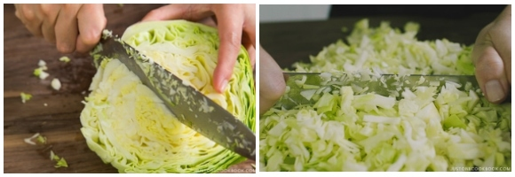Cut the pork belly slices in half and set aside.
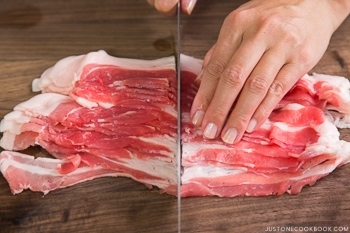
To Cook Okonomiyaki
After one hour, take out the batter from the refrigerator. Add 4 large eggs, ½ cup (8 Tbsp) tempura scraps (tenkasu/agedama), and ¼ cup (4 Tbsp) pickled red ginger (kizami beni shoga) in the bowl. Mix well until well-combined.
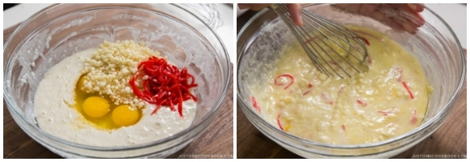Add chopped cabbage to the batter ⅓ at a time. Mix well before adding the rest.
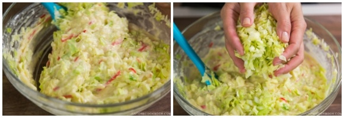In a large pan, heat vegetable oil on medium heat. When the frying pan is hot (400ºF or 200ºC), spread the batter in a circle on the pan. We like thicker okonomiyaki (final thickness is ¾ inches or 2 cm). If you’re new to making okonomiyaki, make a smaller and thinner size so it’s easier to flip.
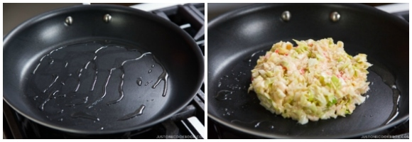Place 2-3 sliced pork belly on top of okonomiyaki and cook covered for 5 minutes.
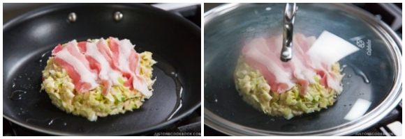When the bottom side is nicely browned, flip over.
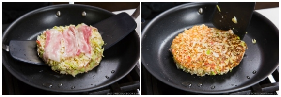Gently press the okonomiyaki to fix the shape and keep it together. Cover and cook for another 5 minutes.
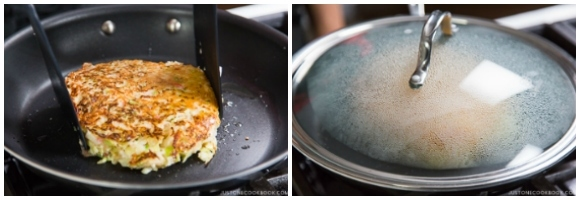Flip over one last time and cook uncovered for 2 minutes. If you're going to cook the next batch, transfer to a plate.
To Serve
Here are the ingredients for toppings. Apply okonomiyaki sauce with a brush or spoon, add Japanese mayonnaise in zigzagging lines (optional), and sprinkle dried bonito flakes (katsuobushi). You can also put dried green seaweed (aonori), chopped green onions, and pickled red ginger on top for garnish. Please see the video for this step.
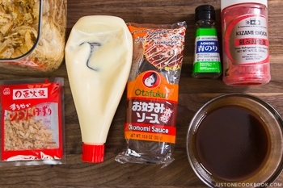
To Store
Wrap each okonomiyaki (no sauce or toppings) in aluminum foil and then put it in a freezer bag. Store in the refrigerator for up to 3 days and in the freezer for a month. When you serve, defrost first and put it in a toaster oven or oven to heat it up. It's a great quick meal!